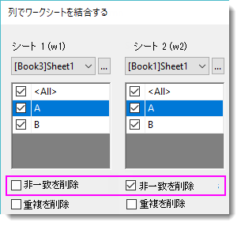
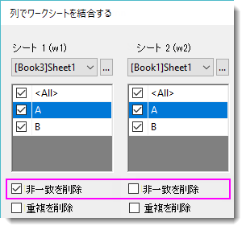

データ整形：列で2つのワークシートを結合する
複数ワークシートを一致する列で結合
必要なOriginのバージョン: Origin 2022以降
1. wjoincols irng:=([Book3]Sheet1,[Book1]Sheet1) settings.cols:="<All>||A|B" settings.unmatch:="0|1" settings.multiple:="0|1" settings.conditions:="w1.A=w2.A" settings.sort:=3 settings.sortsheet:=1 settings.sortcol:="w1.A";
2. wjoincols -r 2 irng:=([Book2]Data2,[Book1]Data1) settings.cols:="ID1|ID2||ID1|ID10" settings.conditions:="w1.ID1=w2.ID1" settings.unmatch:="1|1" settings.multiple:="1|1" settings.mergeby:=5 settings.merge:=0;
3. wjoincols irng:=([Book2]Sheet1,[Book1]Sheet1) settings.cols:="<All>||<All>" settings.conditions:="w1.A=w2.A|w1.B=w2.B" settings.unmatch:="0|1" settings.multiple:="0|1" settings.sortsheet:=1;
4. wjoincols irng:=([Book2]Sheet1,[Book1]Sheet1) query:="w1 left join w2 on w1.A=w2.A";
5. wjoincols -r 2 irng:=([Book1]Sheet1,[Book2]Sheet1) query:="w1 inner join w2 on w1.A=w2.A and w1.B=w2.B order by match asc merge multiples by first row";
| 表示 名 |
変数 名 |
I/O と データ型 |
デフォルト 値 |
説明 |
|---|---|---|---|---|
| 入力 | irng |
入力 Range |
|
入力ワークシートデータ範囲を指定
シンタックス: ([BookName1]SheetName1!, [BookName2]SheetName2!). |
| 設定 | settings |
入力 TreeNode |
|
ツリーノードを制御します。詳細はツリーノード設定の詳細をご覧ください。 |
| query |
入力 string |
|
たとえば、SQL言語での一致条件、複数の一致セル、不一致値などのような組み合わせオプションを指定します。詳細はSQLクエリのサンプルセクションをご覧ください。 | |
| 出力ワークシート | ow |
出力 Worksheet |
|
出力範囲を指定します。シンタックスはこちらです。 |
このXファンクションは2つのワークシートを1つに結合するために使用します。結合はそれぞれの入力されるワークシートにある列を照合することで決定されます。特別なケースでの値の扱いを設定するオプションがあります。例えば、一致列が複数ある場合、一致する値がない場合、欠損値がある場合などです。このツールの機能の詳細については、このツールに関するOriginのヘルプページを参照してください。
LabTalkスクリプトを経由して実行する場合、このXファンクションも一致条件と結合オプションを指定するためのSQL言語の使用をサポートしています。
設定ツリーはXファンクションaddtool_rise_timeのすべての設定オプションを指定します。
シンタックス: settings.Treenode:=<value>
例: settings.sort = 2
| ツリーノード | ラベル | データ型 | デフォルト | 説明 |
|---|---|---|---|---|
| cols | 入力 string | 結合する列を指定します。シートは”||”で区切られ、同じシートにある列は”|”で区切られます。例えば、 settings.cols:="<All>||w2-A|w2-B"これは最初のシートのすべての列と、LongNameが「w2-A」および「w2-B」の2つの列が選択されていることを意味します。 | ||
| unmatch | 非一致を削除 | 入力 string | 一致しない値を削除するかどうかを指定します。 w1とw2はそれぞれ制御され、”|”で区切られます。（例：0|1）
| |
| multiple | 重複を削除 | 入力 string | 1つの値に一致するセルが複数ある場合、このコントロールを使用して、mergebyで指定された統計値で重複行をマージし、複製を削除するかどうかを指定します。 w1とw2はそれぞれ制御され、”|”で区切られます。（例：0|1）
0 = 削除しない, 1 = 削除 | |
| conditions | 一致する列 | 入力 string | ワークシートを結合するために、一致する列条件を指定します。一致する列の全ての値は比較され、一致した行は結果ワークシートで同じ行として結合されます。
完全なシンタックス: | |
| mergeby | 複数を統合 | 入力 int | 0 | multiple=1のときに利用できます。複数を置き換える統計値を設定します。
0=最初の行、1=最終行、2=最大、3=最小、4=平均、5=合計 |
| combine | 全ての組み合わせに合致 | 入力 int | 1 | 結合されたワークシートにすべての可能な組み合わせを表示するかどうかを決定します。
|
| merge | 一致した列を1つに統合 | 入力 int | 1 | 結合ワークシート内の一致した列のみ保持するか指定します。
|
| missing | 欠損値を考慮する | 入力 int | 0 | 一致した列の欠損値行を無視するか指定します。
|
| sort | ソート出力 | 入力 int | 2 | 結合シートの一致した値の順序を制御します。
|
| sortsheet | シート | 入力 int | 0 | sort=2のときに利用できます。並べ替えるワークシートのインデックスを指定します。0 = w1, 1 = w2. |
| sortcol | 列 | 入力 string | sort=3もしくは4のときに利用できます。ソートする列を指定します。
シンタックスは w1/w2.列ロングネーム/列ショートネーム です。例えば、 | |
| id | データセット識別子 | 入力 int | 0 | ソースデータセットの識別子を指定します。
0 = なし, 1 = 範囲, 2 = ブック名, 3 = シート名, 4 =インデックスで作成された行番号を使用してデータセットソースを指定, 5 = ソースワークシートのシートラベルを表示 |
| index | インデックス | 入力 string | <自動> | id=4のときに利用できます。識別子のインデックスを指定します。
フォーマットは、開始：増分です。例えば、 |
1.非一致を削除
w1 Left Join w2 on //Left Join は Right Join/Inner Join/Full Outer Join の場合もあります w1.A=w2.A
| Left Join | Right Join | Inner Join | Full Outer Join |
|  |  |
2.複数の一致する列
w1 Inner Join w2 on //Inner Join は Left Join/Right Join/Full Outer Join にもできます w1.ID=W2.UserID and w1.A=w2.A // and は or の場合もあります。
3.特定の列で並び替え
w1 Full Outer Join w2 on //Full Outer Join は Left Join/Right Join/Inner Join にもできます w1.A=w2.A Order by w1.C asc //w1.C は w1/w2/match でも, asc は desc にもできます
4.重複を削除
w1 Right Join w2 on //Right Join は Left Join/Inner Join/Full Outer Join にもできます w1.A=w2.A w1 Merge multiples by Average //Average は First/Last/Min/Max/ にもできますこの場合、ｗ2の重複は除されません。